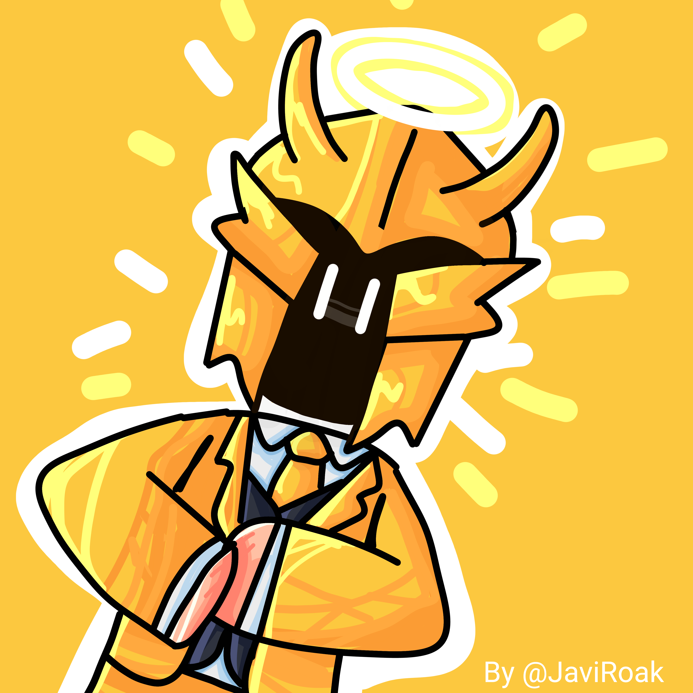

I'm a passionate developer with his primary focus on game and web development. I tend to write clean, fast-paced efficient code, for the best user experience. All my projects are primarily managed via GitHub.
I primarily specialize in back-end development, while I also tend to do front-end development sometimes. I have most experience in Lua(u) and Java. I recently began learning HTML, CSS, JavaScript and Python.
I'm a programmer on Roblox with over 4 years of experience, unlike web development, which I only started a few months ago. Either way, tend to write clean, efficient and maintable code to achieve the best user experience.
All of my contributed projects and personal projects are primarily managed via GitHub.
Some of my Roblox libraries and frameworks I use include: DataService, TopbarPlus, Satchel, and more.
Coding in Lua(u), HTML, Python, Java.